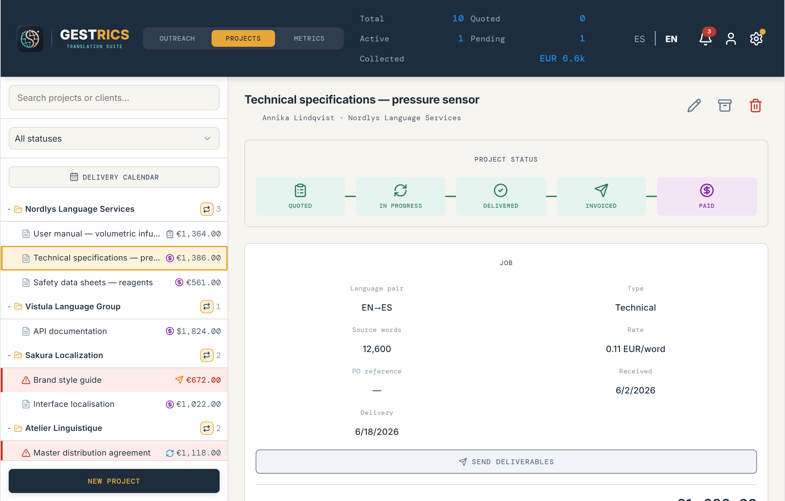
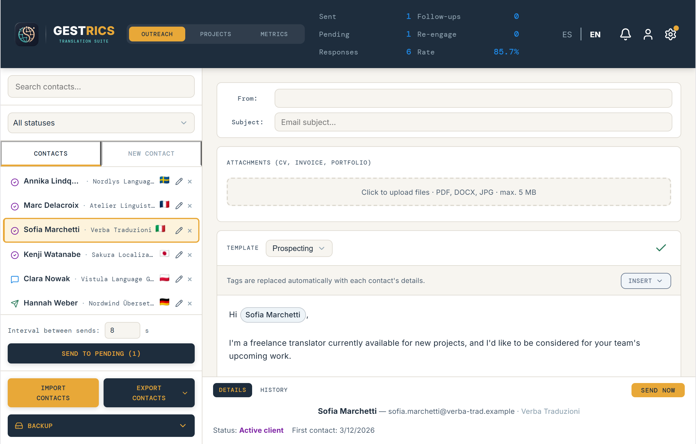
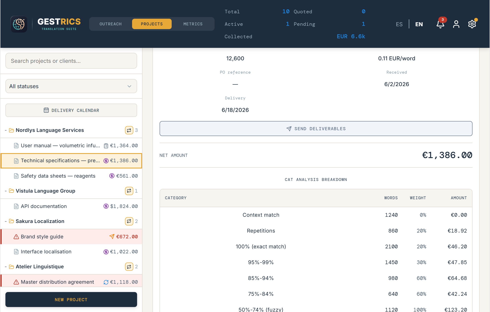
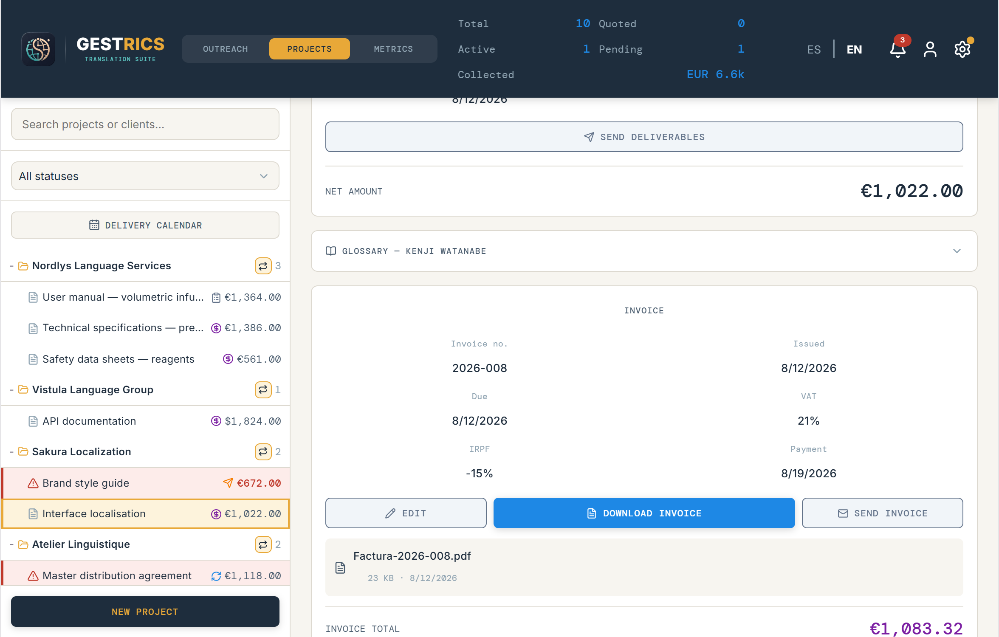
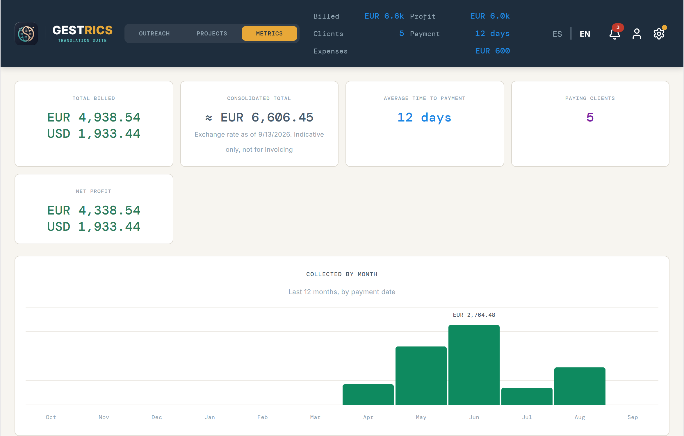
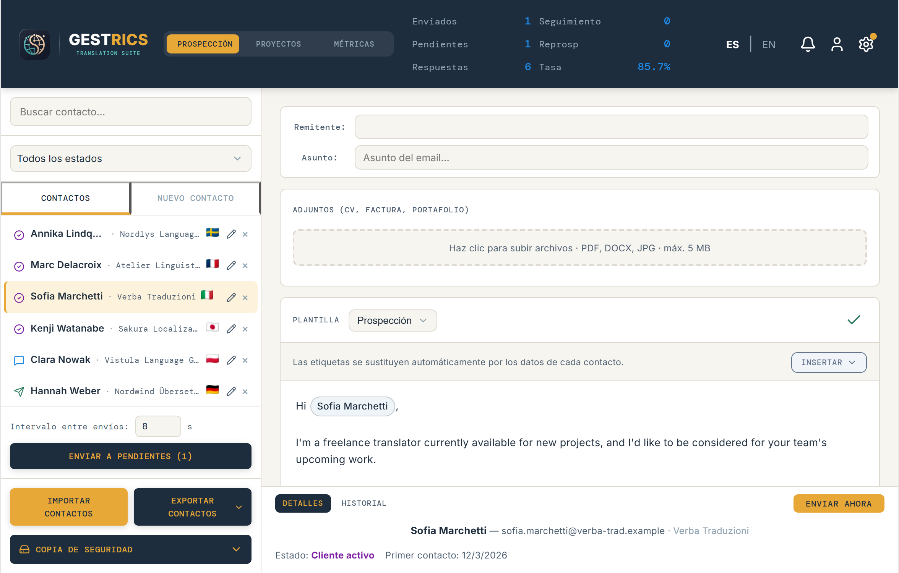
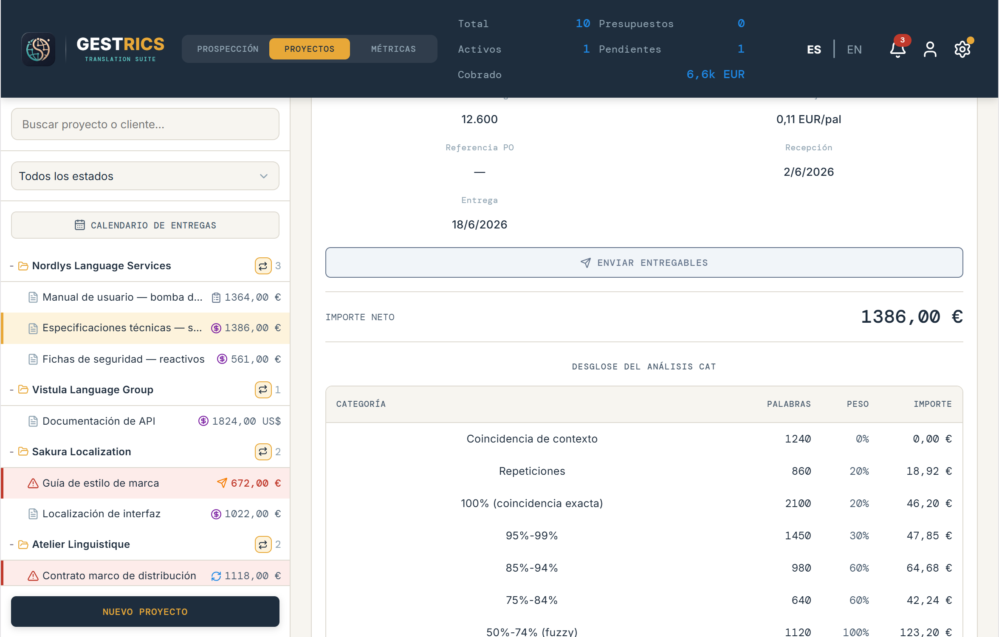
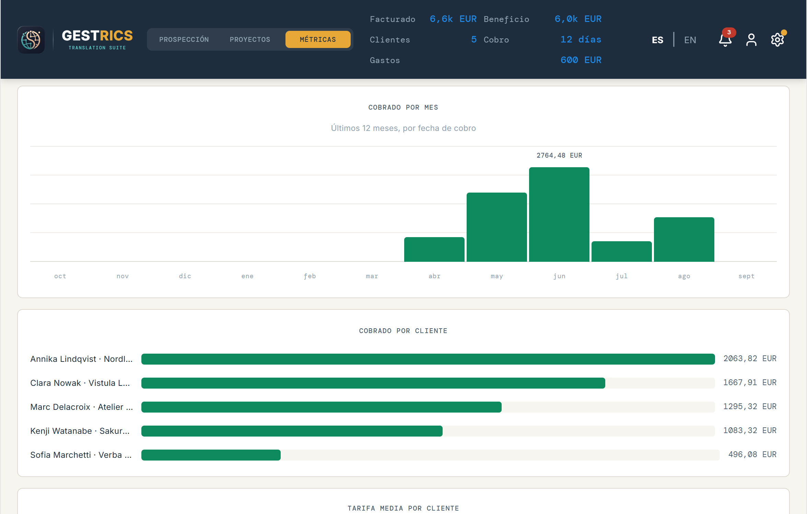

GestricsDesktop CRM for Freelance Translators
Gestrics is the desktop program where a freelance translator keeps their clients, their jobs, their invoices and their payments. It installs on your computer and stays there — no central server, no cloud account, no subscription.





There is no central server, no account to create, and no cloud copy that depends on me still being around. Your contacts, projects and invoices sit in a file on your own disk. Backups are yours, to a file you choose and keep.
Email goes out through your own account over SMTP with an app password. Gestrics does not send anything on your behalf from anywhere else.
Downloading and installing Gestrics is free. Using it requires a license, activated inside the app. It is a one-time payment, not a subscription.
Windows may show a "Windows protected your PC" warning during installation, because the installer isn't digitally signed yet. It doesn't mean the app is unsafe: click More info, then Run anyway.
Gestrics es el programa de escritorio donde un traductor autónomo lleva sus clientes, sus encargos, sus facturas y sus cobros. Se instala en tu ordenador y ahí se queda: sin servidor central, sin cuenta en la nube, sin suscripción.



No hay servidor central, ni cuenta que crear, ni copia en la nube que dependa de que yo siga aquí. Tus contactos, proyectos y facturas están en un archivo de tu propio disco. Las copias de seguridad son tuyas, a un archivo que eliges y guardas tú.
El correo sale por tu propia cuenta mediante SMTP y una contraseña de aplicación. Gestrics no envía nada en tu nombre desde ningún otro sitio.
Descargar e instalar Gestrics es gratis. Usarlo requiere una licencia, que se activa dentro de la propia app. Es un pago único, no una suscripción.
Es posible que Windows muestre un aviso de "Windows protegió tu PC" durante la instalación, porque el instalador todavía no tiene firma digital. No significa que la app sea insegura: haz clic en Más información y luego en Ejecutar de todas formas.